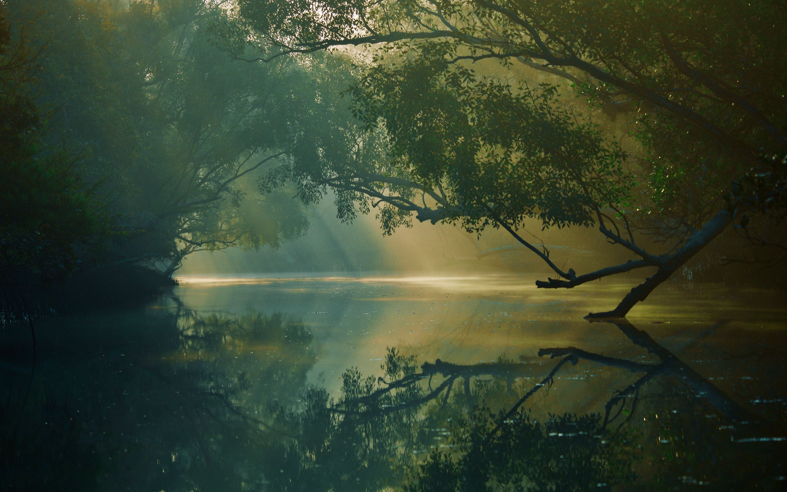

It is November 16, 1983 in Hawkins, Indiana. Inside Hawkins National Laboratory, a scientist bursts out a door, running from something that isn't there. He runs to the elevator,tapping the floor button repeatedly, looking back and forth. He then gets in and taps the button again. He looks forward then up slowly, as he hears and sees something that we can't see. He is then pulled up as the elevator doors close, yelling loudly.
We then see the Wheeler residence, as four friends--Mike Wheeler, Will Byers, Dustin Henderson, and Lucas Sinclair--play Dungeons & Dragons. We then see that the Demogorgon is played, as Will is pressured to cast Fireball. He rolls the die but it lands on the floor, with the group scrambling for it. Mike is then called by his mother, Nancy, to end the game. Meanwhile, the trio find it, but it is a 7, as only a 13 or higher can cast a Fireball, which means Will was eaten. Will then leaves, after telling Mike that it was a 7.
